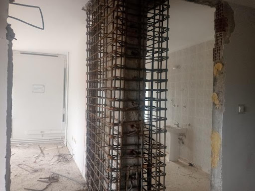

Ali Kılıç ve KLC KAROT ekibi; karot delme ve betonarme güçlendirme işlerinde uzun yıllara dayanan saha tecrübesini Kayseri'ye taşıyor.
Ali Kılıç, inşaat ve betonarme güçlendirme alanında Fransa'da edindiği 25 yıllık tecrübeyi, bugün Kayseri ve çevresindeki bina sahiplerine, müteahhitlere ve mühendislik ofislerine sunuyor.
KLC KAROT, karot delme işinin yalnızca "delik açmak" olmadığını bilir: doğru çap, doğru konum, statik yapıya zarar vermeyen bir uygulama ve temiz bir teslimat gerektirir. Her projede bu titizlikle çalışıyoruz.
Doğalgaz baca delikleri, tesisat geçişleri, kolon-temel güçlendirme ve epoksi filiz ekme gibi işlerde uçtan uca çözüm sunuyoruz.

Her uygulama öncesi ölçüm ve konum kontrolü yapılır; geri dönüşü olmayan beton kesimlerinde hata payı bırakmayız.
Kolon, kiriş ve perde betonlarda yapılan her delik ve güçlendirme, yapının taşıyıcı sistemine zarar vermeyecek şekilde planlanır.
Toz kontrol ekipmanları ile çalışma alanını ve çevresini kirletmeden iş teslim ederiz.
Teklif öncesi net fiyatlandırma, iş süresince düzenli bilgilendirme.